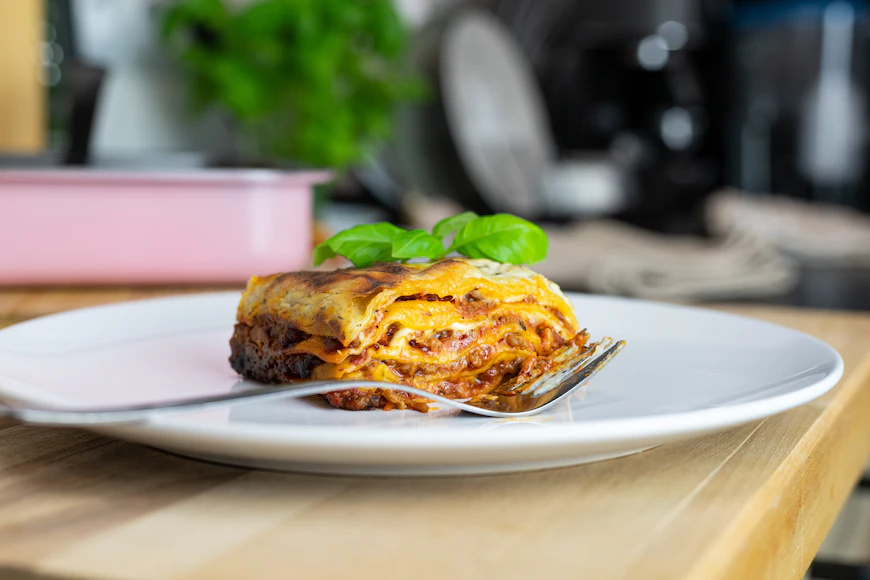

Lasagna

Here is a quick and easy two step lasagna recipe. Made with three cheeses and Prego sauce.
Ingredients
1 (26 ounce) jar Prego® Traditional Italian Sauce
6 each uncooked lasagna noodles
1 (15 ounce) container ricotta cheese
2 cups shredded mozzarella cheese
¼ cup grated Parmesan cheese
Steps
- Spread about 1 cup pasta sauce in 2-quart shallow
baking dish (11x7-inch). Top with 3 uncooked noodles, ricotta cheese, 1
cup mozzarella cheese, Parmesan cheese and 1 cup pasta sauce. Top with
remaining 3 uncooked noodles and remaining pasta sauce. Cover.
- Bake at 375 degrees F for 1 hour Uncover and top with remaining
mozzarella cheese. Let stand 5 minutes.
Back